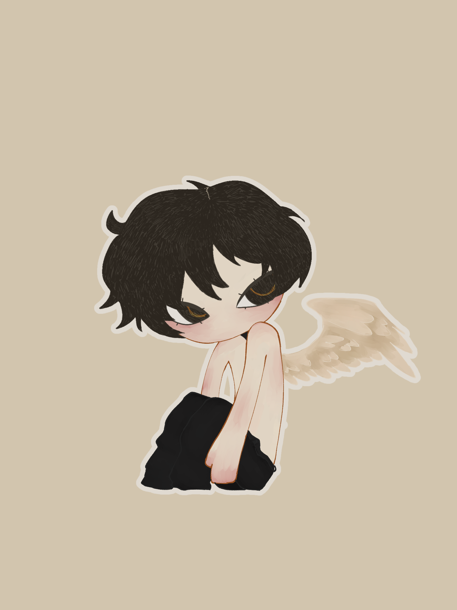
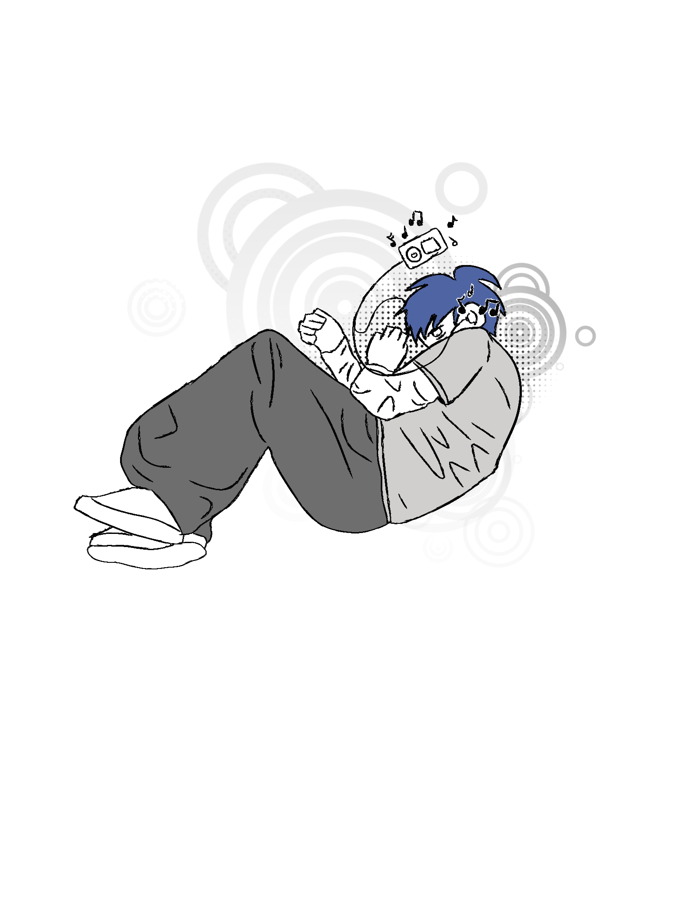
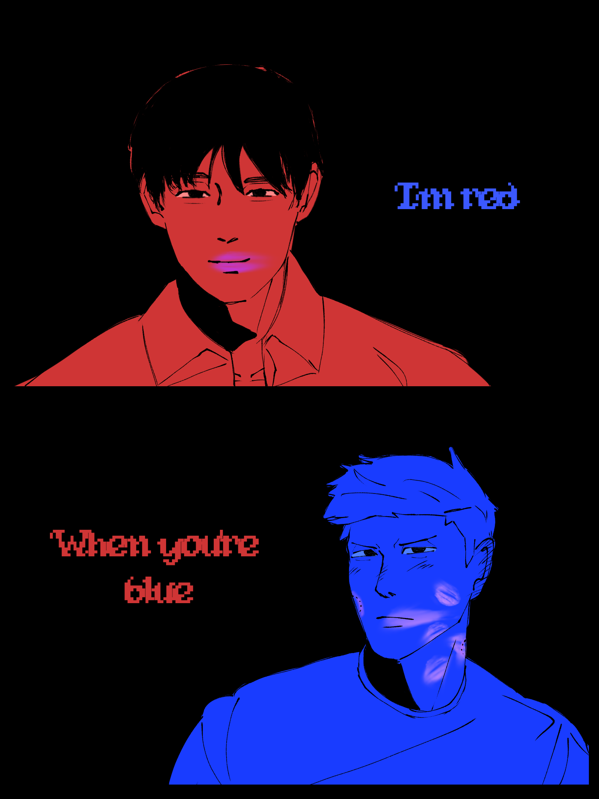
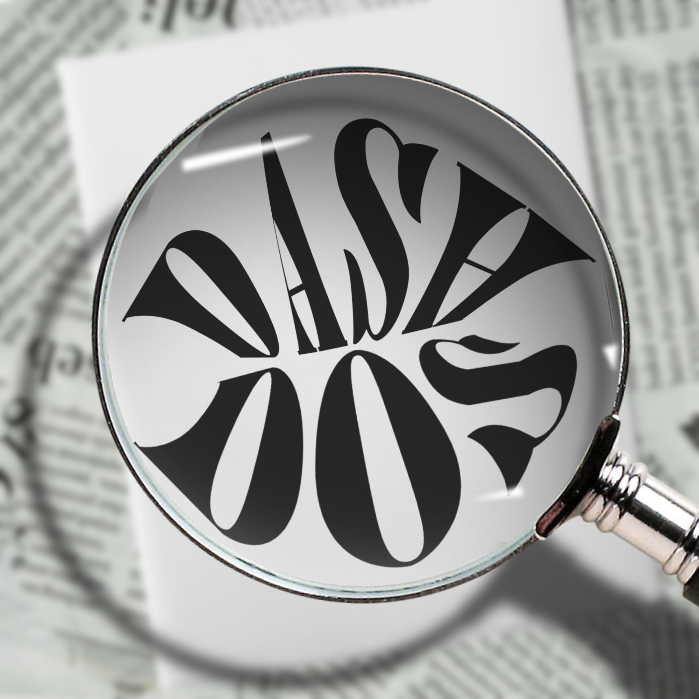
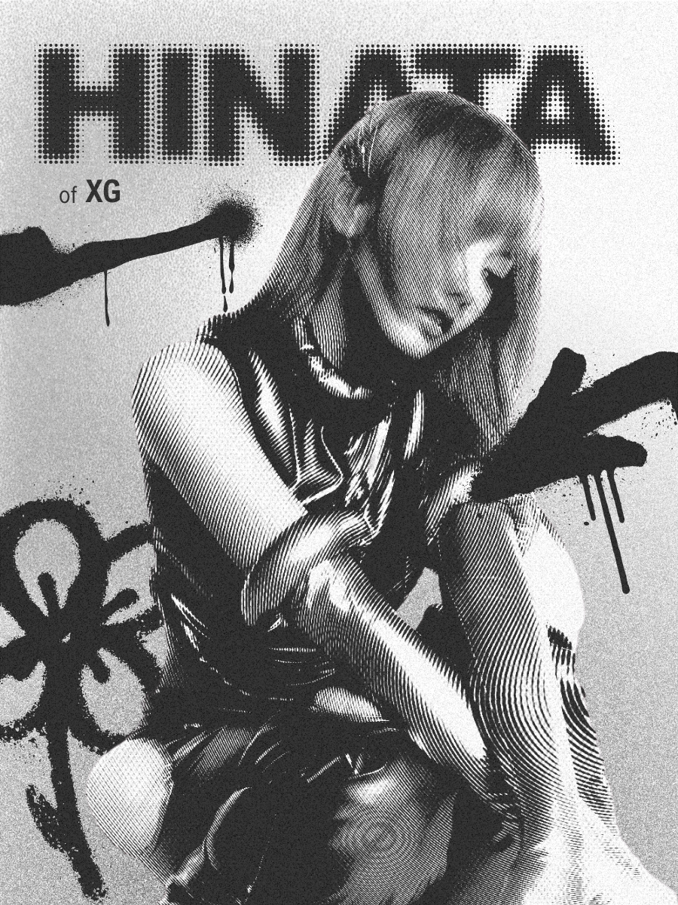
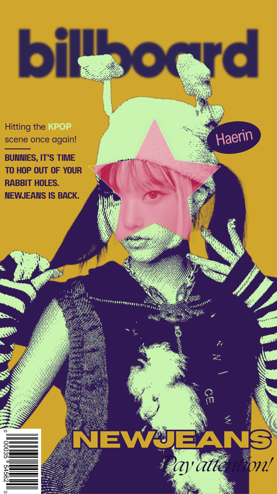

Meet Kian Ham Balbarona
"I want things to be beautiful."
ABOUT ME

Hello! It's my pleasure to meet you. Most of my people refer to me as my first name "Kian", feel free to do so as well!
I’m a student at the University of the Philippines Open University, pursuing a Bachelor of Arts in Multimedia Studies. Considering my artistic background, I would say that it still needs a lot of work. I’ve always loved to create, as I believe that I, like everyone else, am born to create. I mostly do graphic design, with Canva being my best buddy these past few years. I do a little digital art and video editing here and there with my limited knowledge.
THINGS I LOVE
- Music - Ethel Cain, PinkPantheress, Denise Julia, After...(more)
- Arts and Crafts
- Video Games
- Cats
- Pastries - STEAMING HOT pastries
- Vintage Cameras
- Color Blue
- Free 3rd spaces
PASSION PROJECTS
Digital Illustration
These are all my recent illustrations, trying to find my style. At the same time, I'm trying to get better at it. It feels so different from drawing with a real pencil.



Graphic Designing
One of my passion that I desperately want to improve on. Here are some of my projects.


